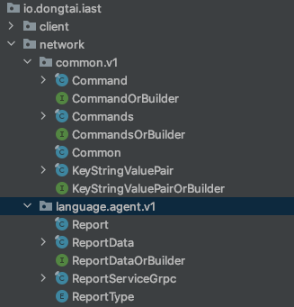
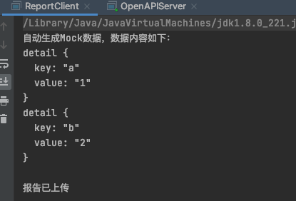
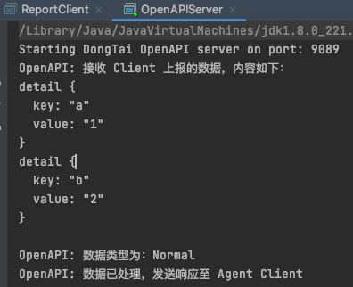

本文将使用 gRPC 作为集成技术，实现一个基于 Java 的数据采集与上报的解决方案。解决方案是一个模拟洞态 IAST Agent 上报采集数据的应用程序，它通过模拟生成相关的数据，然后上报至 Server 端。由于本文的重点是介绍 gRPC 如何在 Java 项目中使用，我们将不关注业务逻辑、数据持久性或客户端UI 等内容。
应用架构
1 | ________________ ___________________ |
Agent Client - 模拟生成 心跳数据、第三方依赖组件数据、方法调用数据等，并发送至 OpenAPI Service.
OpenAPI Service - 接收 Agent Client 上报的 心跳数据、第三方依赖组件数据、方法调用数据等，并通过日志打印的方式输出至控制台.
初始化项目
前提条件：
- Java 1.8 以上
- Maven
- IntelliJ Idea
通过 Maven 创建项目之后，在 pom.xml 文件中安装项目的依赖。gRPC 的 Java 文档中介绍了依赖的细节，此处不进行赘述，本项目的配置如下：1
2
3
4
5
6
7
8
9
10
11
12
13
14
15
16
17
18
19
20
21
22
23
24
25
26
27
28
29
30
31
32
33
34
35
36
37
38
39
40
41
42
43
44
45
46
47
48
49
50
51
52
53
54
55
56
57
58
59
60
61
62
63
64
65
66
67
68
69
70
71
72
73
74
75
76
77
78
79
80
81
82
83
84
85
86
87
88
89
<project xmlns="http://maven.apache.org/POM/4.0.0"
xmlns:xsi="http://www.w3.org/2001/XMLSchema-instance"
xsi:schemaLocation="http://maven.apache.org/POM/4.0.0 http://maven.apache.org/xsd/maven-4.0.0.xsd">
<parent>
<artifactId>gRPC-Example</artifactId>
<groupId>org.example</groupId>
<version>1.0-SNAPSHOT</version>
</parent>
<modelVersion>4.0.0</modelVersion>
<artifactId>client</artifactId>
<properties>
<maven.compiler.source>8</maven.compiler.source>
<maven.compiler.target>8</maven.compiler.target>
</properties>
<dependencies>
<!-- gRPC 所需依赖 -->
<dependency>
<groupId>com.google.protobuf</groupId>
<artifactId>protobuf-java</artifactId>
<version>3.6.1</version>
</dependency>
<dependency>
<groupId>io.grpc</groupId>
<artifactId>grpc-netty-shaded</artifactId>
<version>1.15.1</version>
</dependency>
<dependency>
<groupId>io.grpc</groupId>
<artifactId>grpc-protobuf</artifactId>
<version>1.15.1</version>
</dependency>
<dependency>
<groupId>io.grpc</groupId>
<artifactId>grpc-stub</artifactId>
<version>1.15.1</version>
</dependency>
</dependencies>
<build>
<defaultGoal>clean generate-sources compile install</defaultGoal>
<plugins>
<plugin>
<groupId>org.apache.maven.plugins</groupId>
<artifactId>maven-compiler-plugin</artifactId>
<version>2.5.1</version>
<inherited>true</inherited>
<configuration>
<source>1.8</source>
<target>1.8</target>
</configuration>
</plugin>
<!-- protobuf的构建插件可以替换为 protobuf-maven-plugin，具体用法可自行研究 -->
<plugin>
<groupId>com.github.os72</groupId>
<artifactId>protoc-jar-maven-plugin</artifactId>
<version>3.6.0.1</version>
<executions>
<execution>
<phase>generate-sources</phase>
<goals>
<goal>run</goal>
</goals>
<configuration>
<includeMavenTypes>direct</includeMavenTypes>
<inputDirectories>
<include>src/main/java/proto</include>
</inputDirectories>
<outputTargets>
<outputTarget>
<type>java</type>
<outputDirectory>src/main/java</outputDirectory>
</outputTarget>
<outputTarget>
<type>grpc-java</type>
<pluginArtifact>io.grpc:protoc-gen-grpc-java:1.15.0</pluginArtifact>
<outputDirectory>src/main/java</outputDirectory>
</outputTarget>
</outputTargets>
</configuration>
</execution>
</executions>
</plugin>
</plugins>
</build>
</project>
配置Protocol Buffers
正常情况下，建议每个服务都配置一个包，用于存放服务对应的 proto 文件；本项目将通过 report.proto 实现 Report 服务用于处理 Agent Client 上报的数据。
Common.protoKeyStringValuePair 字段在 Common.proto中 定义，然后被用于其它多个 message 中。1
2
3
4
5
6
7
8
9
10
11
12
13
14
15
16
17
18
19
20
21
22
23
24
25
26
27
28
29
30
31
32
33
34
35
36
37
38
39
40
41
42/*
* Licensed to the Apache Software Foundation (ASF) under one or more
* contributor license agreements. See the NOTICE file distributed with
* this work for additional information regarding copyright ownership.
* The ASF licenses this file to You under the Apache License, Version 2.0
* (the "License"); you may not use this file except in compliance with
* the License. You may obtain a copy of the License at
*
* http://www.apache.org/licenses/LICENSE-2.0
*
* Unless required by applicable law or agreed to in writing, software
* distributed under the License is distributed on an "AS IS" BASIS,
* WITHOUT WARRANTIES OR CONDITIONS OF ANY KIND, either express or implied.
* See the License for the specific language governing permissions and
* limitations under the License.
*
* From Skywalking
*
*/
syntax = "proto3";
package dongtai.v1;
option java_multiple_files = true;
option java_package = "io.dongtai.iast.network.common.v1";
option csharp_namespace = "DongTai.NetworkProtocol.V1";
option go_package = "io.dongtai.iast/repo/goapi/collect/common/v3";
message KeyStringValuePair {
string key = 1;
string value = 2;
}
message Commands {
repeated Command commands = 1;
}
message Command {
string command = 1;
repeated KeyStringValuePair args = 2;
}
report.proto
report 定义了 uploadReport 和 uploadStreamReport 方法，用于上报单条报告和多个报告。1
2
3
4
5
6
7
8
9
10
11
12
13
14
15
16
17
18
19
20
21
22
23
24
25
26
27
28
29
30
31
32syntax = "proto3";
package dongtai.v1;
option java_multiple_files = true;
option java_package = "io.dongtai.iast.network.language.agent.v1";
option csharp_namespace = "DongTai.NetworkProtocol.V1";
option go_package = "io.dongtai.iast/repo/goapi/collect/language/agent/v3";
import "common/Common.proto";
// Collect performance raw data from browser.
service ReportService {
// report once per page
rpc uploadReport (ReportData) returns (Commands) {
}
// report one or more error logs for pages, could report multiple times.
rpc uploadStreamReport (stream ReportData) returns (Commands) {
}
}
enum ReportType {
Normal = 0;
Error = 1;
}
message ReportData {
ReportType reportType = 1;
repeated dongtai.v1.KeyStringValuePair detail = 2;
}
使用 Maven Plugin 生成gRPC代码
在项目的根目录中执行如下命令，生成 gRPC 代码1
mvn clean generate-sources compile install
生成代码的目录结构如下：

自动生成的gRPC代码解释
从上面定义的.proto服务可以生成如下代码：
- proto文件中定义的Message类型 - 如 Command.java, Commands.java, KeyStringValuePair.java, ReportType.java, ReportData.java, 用于生成、序列化和查询项目中的请求和响应信息
- <serviceName>Grpc - 如 ReportServiceGrpc，*Grpc 类中包含了很多内部类，其中，有两类需要尤为注意：
- 以 ImplBase 结尾的类，实现了 gRPC Server 端的一部分代码，实现 gRPC Server 的时候，需要继承该类并实现其中的方法；
- 以 Stub 结尾的类，用于实现 gRPC Client 端，后续与 gRPC Server 端通信。
实现 OpenAPI Service
现在，我们对自动生成的gRPC代码有了一定的认识，接下来，让我们实现 gRPC Server，然后运行它。该项目中，OpenAPI Server 运行在 9089 端口。
OpenAPIServer.java1
2
3
4
5
6
7
8
9
10
11public class OpenAPIServer {
public static void main(String[] args) throws IOException, InterruptedException {
System.out.println("Starting DongTai OpenAPI server on port: 9089");
Server server = ServerBuilder.forPort(9089).addService(new ReportServiceImpl()).build(); // create a instance of server
server.start();
server.awaitTermination();
}
}
ReportServiceImpl 类继承了ReportServiceImplBase类，提供了ReportService的具体实现，包括如何处理 Agent Client 上传回来的报告信息。代码如下：1
2
3
4
5
6
7
8
9
10
11
12
13
14
15
16public class ReportServiceImpl extends ReportServiceGrpc.ReportServiceImplBase {
public void uploadReport(ReportData request, StreamObserver<Commands> responseObserver) {
System.out.println("OpenAPI: 接收 Client 上报的数据，内容如下：");
System.out.println(request);
System.out.println("OpenAPI: 数据类型为：" + request.getReportType());
System.out.println("OpenAPI: 数据已处理，发送响应至 Agent Client");
responseObserver.onNext(Commands.newBuilder().build());
responseObserver.onCompleted();
}
public StreamObserver<ReportData> collectStreamScaData(StreamObserver<Commands> responseObserver) {
return super.collectStreamScaData(responseObserver);
}
}
至此，OpenAPI Server端的代码结构已创建完成，后续只需要补充uploadReport和uploadStreamReport方法即可。
实现 Agent Client
gRPC中通过stub实现Client端，然后与Server端通信，该项目中，Agent Client 通过 ReportServiceBlockingStub 类连接 OpenAPI 服务的 9089 端口，然后上传报告数据。
ReportClient.java1
2
3
4
5
6
7
8
9
10
11
12
13
14
15
16
17
18
19
20public class ReportClient {
public static void main(String[] args) {
ManagedChannel channel = ManagedChannelBuilder.forAddress("localhost", 9089).usePlaintext().build();
ReportServiceGrpc.ReportServiceBlockingStub reportServiceStub = ReportServiceGrpc.newBlockingStub(channel);
reportServiceStub.uploadReport(mockReportData());
System.out.println("报告已上传");
}
public static ReportData mockReportData() {
ReportData reportData = ReportData
.newBuilder()
.setReportType(ReportType.Normal)
.addDetail(KeyStringValuePair.newBuilder().setKey("a").setValue("1").build())
.addDetail(KeyStringValuePair.newBuilder().setKey("b").setValue("2").build())
.build();
System.out.println("自动生成Mock数据，数据内容如下：");
System.out.println(reportData);
return reportData;
}
}
效果展示
Agent Client 上报数据

OpenAPI Service 接收并处理数据
